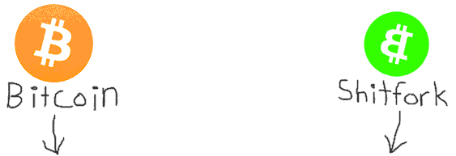
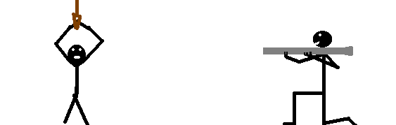

Shitfork will launch on January 1, 2018


First there came the shitcoin.
Now cometh the shitfork.
2018 promises to bring with it 1000 Bitcoin shitforks. A race to the bottom of the barrel.The goal of this project is to kick off 2018 with the absolute shittest Bitcoin fork possible.
By setting the bar this low, things can only get better.
We're simply calling it "Shitfork" (BSHT)


Some of Shitfork's features
Shitfork is proudly endorsed by the following religous leaders

His Holiness Roger Ver, protector of Satoshi's original vision™, commander of the Armies of the North, General of the Felix Legions, loyal servant to the true emperor, Marcus Aurelius.

Evan "I swear it was an accident" Duffield

Vitalik "we can just roll it back" Buterin

Jihan Wu
*Jihan Wu has since revoked his endorsement
"It's called Shitfork now but in 6 months everyone will probably just call it Bitcoin" -Jamie Dimon
FAQ
My Favorite Links
 Github
Github Tweeter
TweeterSHITFORK TO THE MOON!